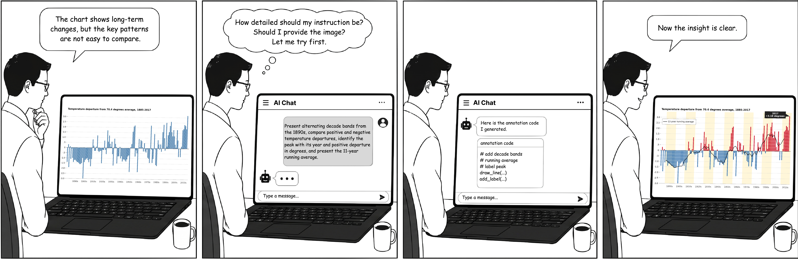
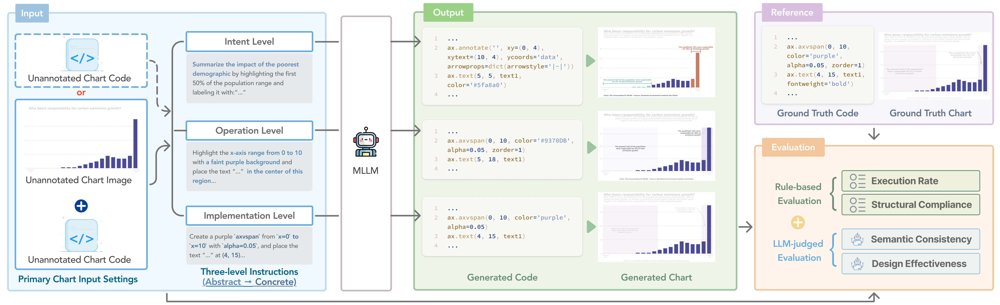

1Fudan University 2Sun Yat-sen University 3HKUST (Guangzhou) 4Yonsei University
*Equal contribution †Co-corresponding authors

Annotations are essential to communicative visualization, helping explain data, emphasize key findings, and guide attention. While multimodal large language models (MLLMs) offer new opportunities for automatic chart annotation authoring, their capabilities in this task remain underexplored. To address this gap, we introduce ChartAnno, a comprehensive benchmark for evaluating MLLMs on chart annotation generation. ChartAnno contains 1,200 real-world charts with paired annotated and unannotated executable code, along with 3,600 annotation instructions spanning three levels of specificity. We also develop a multidimensional evaluation framework combining rule-based and LLM-judged metrics to assess execution, structural compliance, semantic consistency, and design effectiveness. Evaluating 10 representative MLLMs reveals that proprietary models lead overall, though open-source models narrow the gap. While higher instruction specificity improves annotation quality, inferring abstract communicative intent remains difficult across all models. Providing chart images yields marginal benefit when code is available. Further analyses uncover common failure modes, the impact of visual complexity, and the validity of LLM-as-a-judge protocols. Experiments with D3 and SVG demonstrate the generalizability of ChartAnno beyond its primary Python setting.

Results of 10 MLLMs under three input settings across three instruction levels. Exec., Struct., Sem., and Design denote Execution Rate, Structural Compliance, Semantic Consistency, and Design Effectiveness. Cell shading scales with the score within each column; best results are bold. Click a column header to sort, and use the buttons above the table to filter by model group.
| Model | Intent-level | Operation-level | Implementation-level | |||||||||
|---|---|---|---|---|---|---|---|---|---|---|---|---|
| Exec. | Struct.* | Sem. | Design | Exec. | Struct. | Sem. | Design | Exec. | Struct. | Sem. | Design | |
*Struct. reports Chart Fidelity for Intent-level instructions. Sem. and Design are judged on a 1–5 scale; Exec. and Struct. are scores in [0, 1].
@misc{chen2026chartannoevaluatingmllmschart,
title={ChartAnno: Evaluating MLLMs for Chart Annotation Generation},
author={Zhenghan Chen and Zekai Shao and Lidan Tan and Xin Lin and Xingchen Zeng and Yi Shan and Ziyue Lin and Xiaoliang Fu and Xinyuan Liu and Yuetong Guo and Fen Wang and Bongshin Lee and Siming Chen},
year={2026},
eprint={2608.03464},
archivePrefix={arXiv},
primaryClass={cs.AI},
url={https://arxiv.org/abs/2608.03464}
}If you have any questions about ChartAnno, feel free to reach out to us at chenzh26@m.fudan.edu.cn or zkshao23@m.fudan.edu.cn.